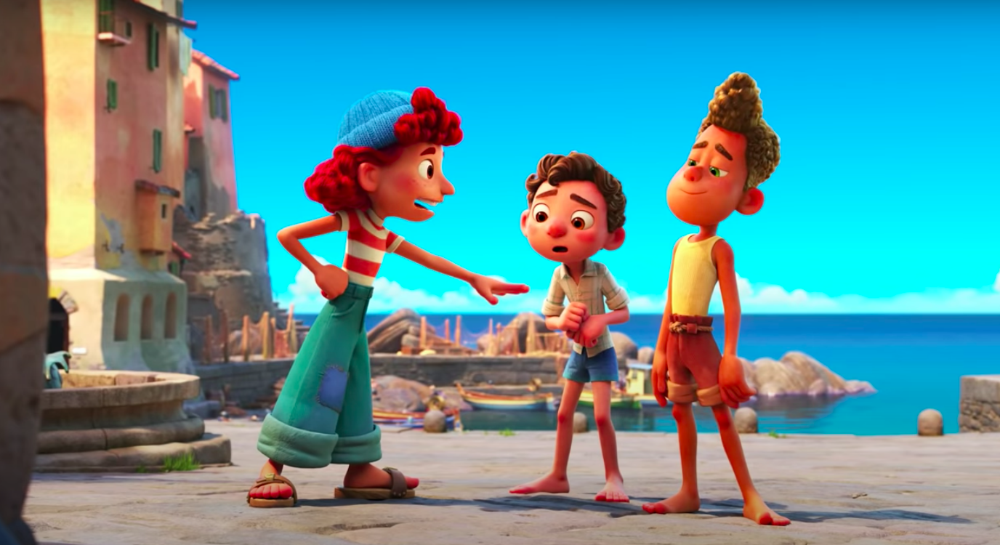
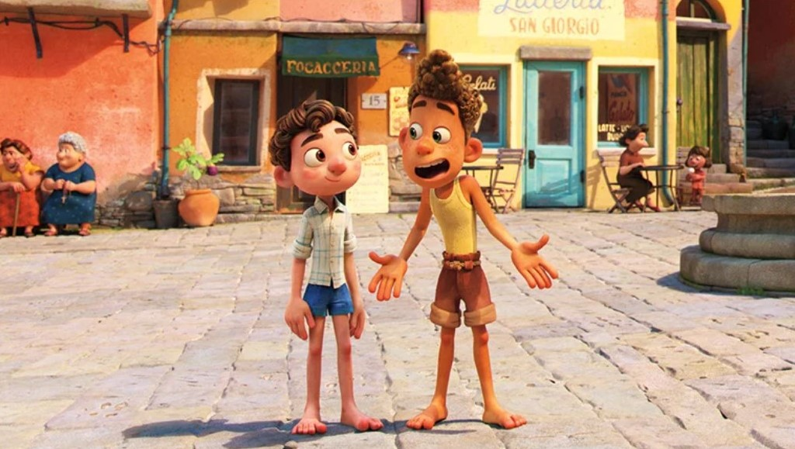
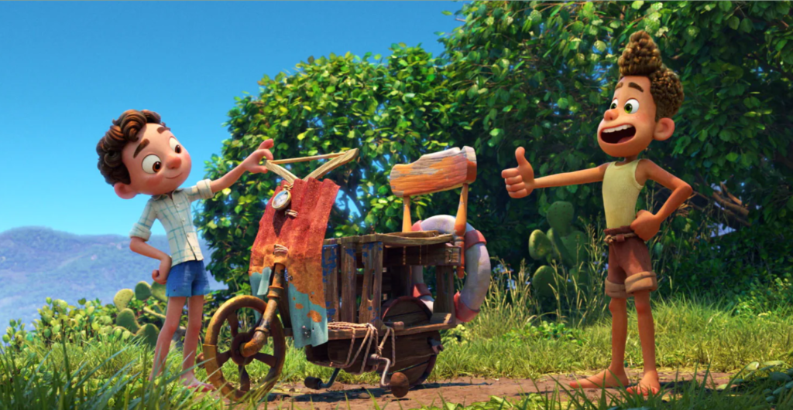

Showing times
Mon, 8 AM & 4 PM
Tue, 10 PM & 6 PM
Wed, 8 AM & 4 PM
Thu, 10 PM & 6 PM
Fri, 8 AM & 4 PM
Sat, 10 PM & 6 PM
Sun, 8 AM & 4 PM
  Luca
After a series of films fervently focused on the existential crisis of being human, it was a gentle relief to see Pixar release a film like "Luca," a film that avoids questions like "what does it mean to truly have a soul?" and instead asks the far more important question of "can two fish monster friends win a triathlon to get a Vespa?" Such are the simple pleasures of the Italian-set gentle masterpiece from America's most trusted animation house, with a film more focused on lush visuals and deep character connections than intricate plot machinations. "Luca" feels like taking a short and sweet European vacation, and the simple pleasures of this fishy film make it not only one of 2021's best but also one of the most inspired Pixar films in years.
Starring
Jacob Tremblay
Jack Dylan Grazer
Emma Berman
Director
Enrico Casarosa
Year
2021
Runtime
100 minutes
Rating
PG
Rotten Tomatoes Score
91%